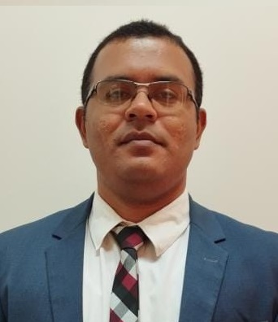

Luan Leandro Nogueira | WDD 130
I am married with Aylla, and we have a little girl called Elisa!! My fascination with technology came to life during my customer support role, a pivotal experience that ignited my journey into the tech realm. Starting with HTML and CSS, I delved deeper into programming languages like PHP and C#. Crafting websites and witnessing client satisfaction, I realized technology isn't just a career—it's a means to positively impact lives. I am convinced that technology holds the power to simplify the world and make life more accessible. Hence, I am fully committed to refining my skills and exploring new opportunities in the vast tech landscape. Beyond my professional commitment, I dedicate part of my time voluntarily to causes I believe in, enhancing teamwork and leadership skills. These diverse experiences haven't just shaped my trajectory but have also enriched my perspective as a developer. Eager to continue pursuing my passion, contributing to a more connected and technologically advanced world.